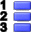
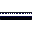

The Tools Menu
- Pointer
-
Selects the pointer tool that lets you select GUI elements. This is the standard tool that is active right after starting Qt Designer.
- Connect Signals/Slots
-
Lets Qt Designer go into the mode where you can connect signals and slots by dragging the mouse.
- Tab Order
-
Lets Qt Designer go into tab order mode, where you can define the tab order of the widgets on your form.
- Button/PushButton
-
Turns on the insertion mode for push buttons. Clicking or dragging on a form inserts a push button (a QPushButton object) while Qt Designer is in this mode.
- Button/ToolButton
-
Turns on the insertion mode for tool buttons. Clicking or dragging on a form inserts a tool button (a QToolButton object) while Qt Designer is in this mode.
- Button/RadioButton
-
Turns on the insertion mode for radio buttons. Clicking or dragging on a form inserts a radio button (a QRadioButton object) while Qt Designer is in this mode.
- Button/CheckBox
-
Turns on the insertion mode for check boxes. Clicking or dragging on a form inserts a check box (a QCheckBox object) while Qt Designer is in this mode.
- Container/GroupBox

-
Turns on the insertion mode for group boxes. Clicking or dragging on a form inserts a group box (a QGroupBox object) while Qt Designer is in this mode.
- Container/ButtonGroup
-
Turns on the insertion mode for button groups. Clicking or dragging on a form inserts a button group (a QButtonGroup object) while Qt Designer is in this mode.
- Container/Frame
-
Turns on the insertion mode for frames. Clicking or dragging on a form inserts a frame (a QFrame object) while Qt Designer is in this mode.
- Container/TabWidget
-
Turns on the insertion mode for tab widgets. Clicking or dragging on a form inserts a tab widget (a QTabWidget object) while Qt Designer is in this mode.
- Views/ListBox
-
Turns on the insertion mode for list boxes. Clicking or dragging on a form inserts a list box (a QListBox object) while Qt Designer is in this mode.
- Views/ListView
-
Turns on the insertion mode for list views. Clicking or dragging on a form inserts a list view (a QListView object) while Qt Designer is in this mode.
- Views/IconView
-
Turns on the insertion mode for icon views. Clicking or dragging on a form inserts an icon view (a QIconView object) while Qt Designer is in this mode.
- Views/Table

-
Turns on the insertion mode for tables. Clicking or dragging on a form inserts a table (a QTable object) while Qt Designer is in this mode.
- Input/LineEdit
-
Turns on the insertion mode for line edits. Clicking or dragging on a form inserts a line edit (a QLineEdit object) while Qt Designer is in this mode.
- Input/SpinBox
-
Turns on the insertion mode for spin boxes. Clicking or dragging on a form inserts a spin box (a QSpinBox object) while Qt Designer is in this mode.
- Input/MultiLineEdit
-
Turns on the insertion mode for multiline edit fields. Clicking or dragging on a form inserts a multiline edit field (a QMultiLineEdit object) while Qt Designer is in this mode.
- Input/ComboBox
-
Turns on the insertion mode for combo boxes. Clicking or dragging on a form inserts a combo box (a QComboBox object) while Qt Designer is in this mode.
- Input/Slider
-
Turns on the insertion mode for sliders. Clicking or dragging on a form inserts a slider (a QSlider object) while Qt Designer is in this mode.
- Input/Dial

-
Turns on the insertion mode for dials. Clicking or dragging on a form inserts a dial (a QDial object) while Qt Designer is in this mode.
- Display/TextLabel
-
Turns on the insertion mode for text labels. Clicking or dragging on a form inserts a text label (a QLabel object configured to display text) while Qt Designer is in this mode.
- Display/PixmapLabel
-
Turns on the insertion mode for pixmap labels. Clicking or dragging on a form inserts a pixmap label (a QLabel object configured to display a pixmap) while Qt Designer is in this mode.
- Display/LCDNumber
-
Turns on the insertion mode for seven-segment displays. Clicking or dragging on a form inserts a seven-segment display (a QLCDNumber object) while Qt Designer is in this mode.
- Display/Line
-
Turns on the insertion mode for lines. Clicking or dragging on a form inserts a line (a QFrame configured to appear as a line) while Qt Designer is in this mode.
- Display/ProgressBar
-
Turns on the insertion mode for progress bars. Clicking or dragging on a form inserts a progress bar ( a QProgressBar object) while Qt Designer is in this mode.
- Display/TextView
-
Turns on the insertion mode for text views. Clicking or dragging on a form inserts a text view ( a QTextView object) while Qt Designer is in this mode.
- Display/TextBrowser
-
Turns on the insertion mode for text browsers. Clicking or dragging on a form inserts a text browser ( a QTextBrowser object) while Qt Designer is in this mode.
- Custom/Edit Custom Widgets
-
Opens the dialog for configuring custom widgets. If custom widgets are already defined, the Custom submenu will contain these as well.